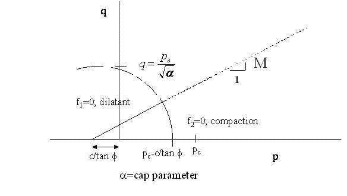
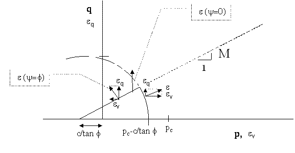
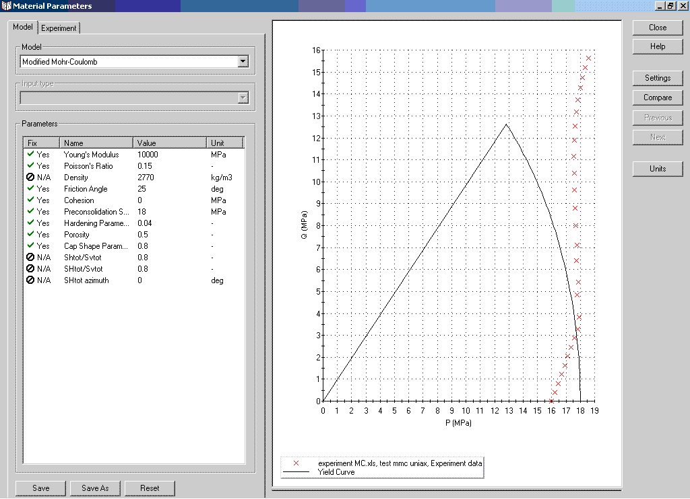
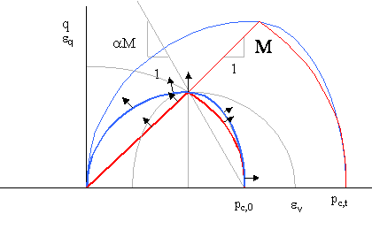

The Modified Mohr-Coulomb (MMC) model is more or less a blend of the Cam-Clay compaction model and the Mohr Coulomb dilatant failure model, and (like Cam-Clay) written in p-q space.
The general p-q definition is according to Equation 1, expressed in principal stresses. The shear stress q is also called the Von Mises (equivalent) shear stress.
[Equation 1]
The Modified Mohr Coulomb dilatant behaviour is exactly equal to Mohr-Coulomb for triaxial conditions.

At the dilatant side, the plasticity limit, is written as:

[Equation 2]
Applying the Mohr-Coulomb parameters c for cohesion and f for the friction angle.
Equation 2 can be rewritten as a stress potential, determining the elastic or plastic stress state:
(elasticity)
(plasticity)
[Equation 3]
When a stress state is calculated to be at the plastic limit, the calculation is set up in such a manner that plastic shear deformation is allowed which keeps the stresses at the plastic limit, which might be an iterative process.
As well as dilational behaviour, Modified Mohr Coulomb, also assumes plastic compressional compaction (pore collapse).

[Equation 4]
or, written as stress potentials:
(elasticity)
(plasticity)
[Equation 5]
We introduced two new parameters, the MMC-cap shape a and the preconsolidation stress pc. The first determines the influence of the Von Mises shear stress q on the onset of plasticity (see figure above), the second determines the position of the plasticity curve which is directly related to the volumetric strain.
Note: the a-value does not relate to the Cam-Clay cap-value, although it can be roughly translated through Equation 14.
Plastic volumetric deformation under isotropic loading is written in Cam-Clay conditions as:

[Equation 6]
The total volumetric strain is:
[Equation 7]
in which:
evp volumetric plastic strain (- or m3/m3)
eve volumetric elastic strain (- or m3/m3)
K elastic bulk modulus (MPa)
pc,0 the preconsolidation pressure (MPa) (onset of plastic deformation on virgin rock sample)
pc (reference) consolidation pressure isotropic stress field (MPa)
n0 the initial porosity at p=pc,0 (-)
g the plastic material hardening parameter (-)
This function is modified somewhat to accommodate for a too low estimate of the shear stress on the maximum shear plane for situations where s2 is not close to s1 or s3.
The strain tensor (or rather the subdivision between shear strain and volumetric strain increments) is determined by the deformation potentials g. Within Geomec these potentials are taken to be equal to the stress potentials f. This is called "associative flow" in mechanics. Non-associative behaviour, ie f¹g, is not currently a Geomec option.
For the dilatant behaviour the function calls:

[Equation 8]
whereas on the compressive side (cap) the function calls:

[Equation 9]
The deformation components are described as the derivative to gx, where mainly the relation between the volumetric and shear strain increment is relevant.
(increment of volumetric strain)
(increment of deviatoric or Von Mises strain)
(relationship between volumetric and shear strain equivalents)
[Equation 10]
For compressive compaction this can be defined as:

[Equation 11]
The scalar x (unknown value) needs to be calculated via the strain hardening law. The strain tensor is a decomposition of the Von Mises equivalent shear strain and volumetric strain, i.e. scaling up to the stress tensor s.
For triaxial situations with zero cohesion (c=0) in compression this reduces to:

[Equation 12]
For uniaxial loading (i.e. no lateral strain), when plastic strain is dominating, the plastic horizontal stress build-up can be written as:
[Equation 13]
A small disadvantage of the MMC is that there is a sharp transition at q= Mp between the compressive and dilatant behaviour, which may lead to numerical instabilities and/or continuous incremental swapping between compressive and dilatant behaviour. Another disadvantage (of the DIANA implementation) is that the compressive cap also moves with the setting of the cohesion, basically creating a mismatch between the measured preconsolidation pressure and the pc0 parameter.

Strain increments (volumetric and Von Mises) plotted in p-q space
E and n (Young’s modulus [MPa], Poisson’s ratio [-])
Elastic parameters, which determine the elastic shear and bulk response. The values should be derived from triaxial loading tests, hence including small compaction plasticity effects here.
n0 (initial porosity [-])
Initial porosity at the onset of plastic deformation (pc=pc,0). Only the product (1-n0)g is used as model input.
c and f (cohesion [MPa] and friction [°])
Used to define the failure and deformation mechanisms. The friction angle is also the dilation angle. c is used to shift the failure lines to the left side by Dp=c/tanf. This also affects the onset of compressive plasticity to shift to lower values than the user inputted pc,0 values.
a (shape parameter [-] )
The shape parameter determines the shape of the yield and deformation function in p-q space and lies normally between 0.1 and 3. Note that this shape parameter has a different definition than in the Cam Clay definition.
g (plastic hardening parameter [-] )
The plastic hardening parameter determines the (plastic) volumetric strain hardening at compaction (or softening at decompaction) and can be derived from Equation 1. It relates basically pc with the volumetric total strain. Only the product (1-n0)g is used as model input.
pc,0 (preconsolidation pressure [MPa])
The preconsolidation pressure is the onset of plastic deformation, assuming an isotropic loading and/or and equivalent according to Equations 2 or 4.
The preconsolidation pressure reflects a geologically early period of higher effective stresses or a period of (slow) consolidation creep.
The preconsolidation pressure does not vary with depth (as might be important in relatively thick layers), unless specified via the RPN-calculator or imported via a pointset.
r (density [ kg / m3] )
Bulk density for gravitational calculations.
SHtot/Svtot; Shtot/Svtot, SHtot-azimuth
Initial stress field (after gravity loading). SHtot/Svtot is the highest horizontal/vertical stress ratio. SHtot-azimuth [º] is the clockwise angle between the SHtot direction and the Northing. Shtot/Svtot is the lower minimal stress ratio [-] ratio, perpendicular to the SHtot direction.
av (Volumetric Thermal Expansion Coefficient [°C-1 or K-1]
Relative volumetric expansion per degree temperature change. The value is three times the linear expansion coefficient, sometimes provided for solids.
To match experimental test results with parameter data, the user may import the test file in the Material database (via an Excel or text file). The test results will appear as crosses (see test below).
By pressing the compare button Geomec will try and find the best (7) parameters set to match the laboratory data. However, Geomec is likely to find a local minimum in obtaining a least-square error fit, not satisfying the best solution.
A Best practice could be:

The difference between the Cam clay and Modified Mohr-Coulomb model is shown below. The main distinction is the sharp edge / switch between the contractant and dilatant regime for the Modified Mohr Coulomb regime. Note that for dilatancy at low confining pressures, Cam clay may over-estimate the shear capacity.

MMC v Cam clay for two sets of consolidation pressures.
A reasonable translation of cap parameters for the contractant regime ((see above) is:
[Equation 14]